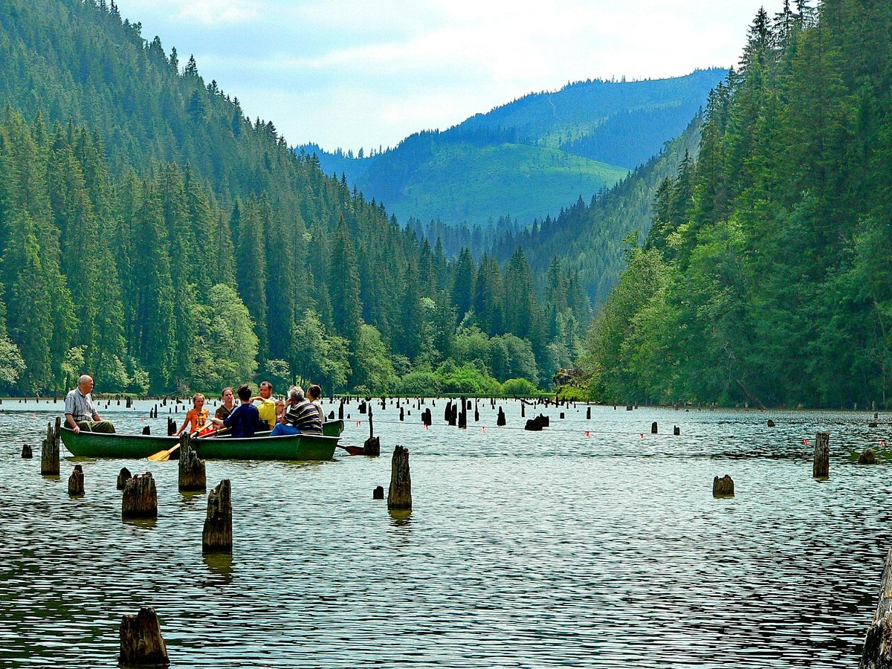

Descoperă Neamțul
Locuri de poveste

Munte • 15 min distanță
Masivul Ceahlău
Olimpul Moldovei te așteaptă cu trasee legendare spre Vârful Toaca și Cascada Duruitoarea.

Relaxare • 20 min distanță
Lacul Izvorul Muntelui
Cel mai mare lac artificial din România, perfect pentru plimbări cu barca sub privirea muntelui.

Peisaj • 40 min distanță
Cheile Bicazului
Un spectacol al naturii sculptat în piatră, drumul care leagă Moldova de Transilvania.

Natură • 50 min distanță
Lacu Roșu
O enigmă a naturii formată prin prăbușirea unui versant, unde trunchiurile brazilor de odinioară străpung oglinda apei.